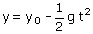
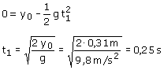

Ecuaciones de la caída de la pelota
|
|
 |
Parámetros: y0 = 0.31 m, g = 9.8 m/s2 |

Aplicación: (Llegada al suelo)
Datos y1 = 0, Incógnita: t1

La pelota, tras rebotar en el suelo, tardará otros 0.25 s en volver al punto de partida. Por tanto el período del movimiento es: 0.5 s y la frecuencia f = 1/0.5 = 2 Hz (Dos oscilaciones por segundo)
En un movimiento armónico la aceleración es proporcional y contraria a la posición. En este movimiento la aceleración es g (Constante), luego no es armónico. Simplemente es un vaivén